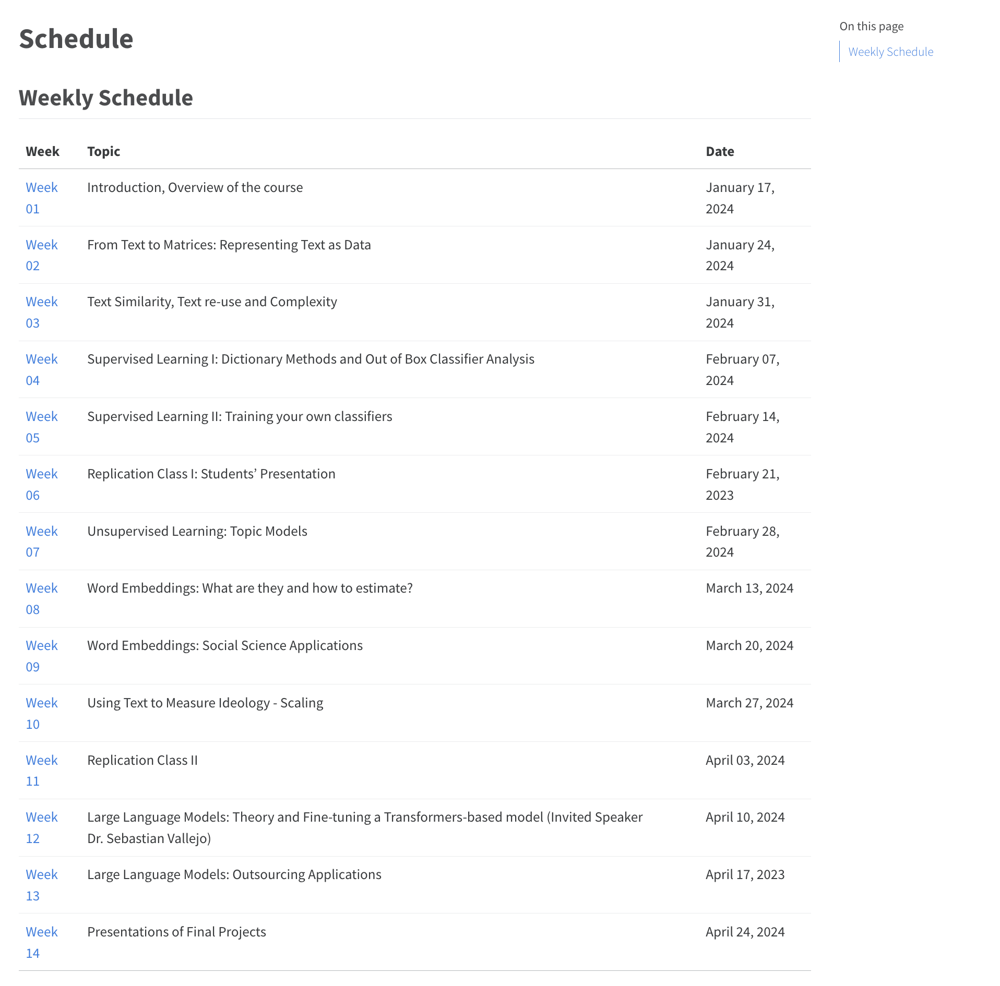

PPOL 6801 - Text as Data - Computational Linguistics
Week 1: Introduction and Logistics
Welcome to Text-as-Data!
Outline
Introduction (me)
Motivation for Computational Linguistics
Digital information age
Principles of Computational Linguistics.
What this course is not.
Examples of models and applications for this course
Introductions (you)
Class Logistics ( + 10 min for you to read through the syllabus)
Q&A
Acquiring text in the web (Jupyter notebooks for scrapping)
Introduction
Professor Tiago Ventura (he/him)
- Assistant Professor at McCourt School.
- Political Science Ph.D.
- Postdoc at Center for Social Media and Politics - NYU.
- Researcher at Twitter.
Some Projects I am involved
- Global Social Media Deactivation.
- Effects of WhatsApp on Elections in the Global South.
- AI and Misinformation in 2024 elections.
- Panels of voter files and twitter users.
Outside of work, I enjoy watching soccer, reading sci-fi and running
Motivation
Rise of the digital information age

Official Documents: Congressional Speeches, Bills, Press Releases, Transcripts, from all over the world!!

The internet: News, Comments, Blogs, etc…

What is this class about?
For many years, social scientists use text in their analysis
Mostly through in-depth reading of documents.
Close Reading. Humans are great at this!
Digital Revolution:
- Production of text increased
- The capacity to analyze them at scale as well.
This class covers methods (and many applications) of using text as data to answer social science problems and test social science theories
Computational Linguistics ~ Distant Reading. Computers are better at understanding patterns, classify and describe content across millions of documents.
Principles of Text Analysis (GMB Textbook)
Principle 1: Social science theories and substantive knowledge are essential for research design
Principle 2: Text analysis does not replace humans—it augments them.
Principle 3: Building, refining, and testing social science theories requires iteration and cumulation.
Principle 4: Text analysis methods distill generalizations from language. (all models are wrong!)
Principle 5: The best method depends on the task. (Qualitative knowledge)
Principle 6: Validations are essential and depend on the theory and the task
Challenges I: Text is an unstructure data source

Challenge II: Text is High dimensionality
From Gentzkow et al 2017:
sample of documents, each \(n_L\) words long, drawn from vocabulary of \(n_V\) words.
The unique representation of each document has dimension \(n_{V}^{n_L}\) .
- e.g., a sample of 30-word (\(n_L\)) Twitter messages using only the one thousand most common words in the English language
- Dimensionality = \(1000^{30}\)
- As a matrix: \(M^{1000}_{n_tweets}\)
Most of what you learned in statistics so far does not equip you to deal with this curse of dimensionality.
Text-as-Data Workflow
Acquire textual data:
- Existing corpora; scraped data; digitized text
Text-as-Data Workflow
Map Documents to a numerical representation M
- Bag-of-words (sparse vectors)
- Embeddings (dense vectors)
- Reduce noise, capture signal
Text-as-Data Workflow
Map M to predicted values \(V^{*}\) of unknown outcomes V
- Descriptive Analysis
- Classify documents into unknown categories
- Topic models
- Classify documents into known categories
- Dictionary methods
- Supervised machine learning
- Transfer-Learning - use models trained in text for other purposes
- Scale documents on latent dimension:
Text-as-Data Workflow
Use \(V^{*}\) in subsequent analysis with other data sources
- This is where social science happens!
Assume you already did it!
- Acquire textual data: Existing corpora; scraped data; digitized text
Overview of TAD Methods
Descriptive inference: how to convert text to matrices, vector space model, bag-of-words, dissimilarity measures, diversity, complexity, style.
Supervised techniques: dictionaries, classication, scaling, machine learning approaches.
Unsupervised techniques: clustering, topic models, embeddings.
Special topics: Word embeddings and Large Language Models.
Some cool applications
Measure text-reuse across thousands of bills from U.S. state legislatures
Estimate levels of toxicity of comments from stremming chats platforms during political debates
Measure how out-group negative makes things go viral on social media
Estimate ideological positions using who a user follows on Twitter, what a user share on social media, political manifestos, or just asking ChatGPT to pair-wise compare politicians
What this class in not about it…
Data acquisition: no scrapping in class. Assume you have learned already.
Regular expressions and basic text manipulation.
CS Stuff: machine translation, OCR, POS, entity recognition.
- Most NLP/CS will focus on developing new algorithms, information retrievel and purely better measurements.
- in a productive dialogue with NLP, we will focus on using text for social science research
- theoretically driven discovery and measurement
- integration with social science problems + tabular data.
Your turn!

Name & pronouns
Why are you taking this course?
Your experience (if any) working with text
The most interesting thing you learned in the DSPP so far
Let’s take a break!
Read the syllabus!
10:00
Class Logistics

Class Requirements
Assume you all have a intro course in statistics and probability (which I know you do)
Math: Basic knowledge of calculus, probability, densities, distributions, statistical tests, hypothesis testing, the linear model, maximum likelihood and generalized linear models is assumed.
Programming: Functional knowledge of R - main programming language of the course. Some Python at the end.
R is excellent for text analysis, and for some social science applications, better than Python
Free, and massive online community writing packages and extending modeling capabilities.
We will divide our learning between using
tidytextandquantedafor text analysis.Download RStudio IDE!
How to do well in the class?
I designed this course as PhD style seminar:
So far, you learned a lot of DS techniques (DS I, DS II, DS III)
You haven’t dig deep enough in a particular field. That’s what electives are for!
Heavy on readings - Lot’s of applied and technical readings.
Do the readings before class
Substantive readings are especially important, because they’ll help you understand what an interesting question looks like – in social science/public policy.
Plan ahead – particularly for the replication exercise
If you have a corpus you want work with, please bring it to class!
What our classes will look like.
This is a one meeting per week class. You should expect:
Between 1h-1.5h of lecture based on this week topics + readings
Your participation in the lecture is expected I will ask your insights about the readings.
Break (10min)
Coding.
- Mix of you working through some code I prepared.
- And I live-coding for you.
Textbook

Logistics
Communication: via slack. Join the channel!
All materials: hosted on the class website: https://tiagoventura.github.io/PPOL_6801_2024//
Syllabus: also on the website.
My Office Hours: Every Tuesday from 4 to 6pm. Just stop by!
Canvas: Only for communication! Materials will be hosted in the website!
Evalutation
| Assignment | Percentage of Grade |
|---|---|
| Participation/Attendance | 10% |
| Problem Sets | 20% |
| Replication Exercises | 30% |
| Final Project | 40% |
Participation
Active involvement during class sessions, fostering a dynamic learning environment.
Contributions made to your group’s ultimate project.
Assisting classmates with slack questions, sharing interesting materials on slack, asking question, and anything that provides healthy contributions to the course.
Problem Sets
| Assignment | Date Assigned | Date Due |
|---|---|---|
| No. 1 | Week 4 | Before EOD of Week 5’s class |
| No. 2 | Week 7 | Before EOD of Week 8’s class |
| No. 3 | Week 9 | Before EOD of Week 10’s class |
You will have a week to complete your assignments
individual assignment
distributed through github
Replication Exercises
Opportunity to learn how science is made!
Work in randomly assigned pairs I will post on Slack.
Step 1: finding a paper to replicate (from the syllabus)
By the end of the week 2 and week 7, you should select an article from the syllabus to be replicated by your team.
Inform the class on slack
“first come, first served”
Step 2: Acquiring the Data
- if you fail to get the data, pick another article.
Step 3: Presentation (weeks 6 and 11)
Step 4: Replication Repository on Github
Final Project
The project is composed of three parts:
- a 2 page project proposal: (which should be discussed and approved by me)
- an in-class presentation,
- A 10-page project report.
| Requirement | Due | Length | Percentage |
|---|---|---|---|
| Project Proposal | EOD Friday Week 9 | 2 pages | 5% |
| Presentation | Week 14 | 10-15 minutes | 10% |
| Project Report | Wednesday Week 15 | 10 pages | 25% |
ChatGPT
You are allowed to use ChatGPT as you would use google in this class. This means:
Do not copy the responses from chatgpt – a lot of them are wrong or will just not run on your computer
Use chatgpt as a auxiliary source.
If your entire homework comes straight from chatgpt, I will consider it plagiarism.
If you use chatgpt, I ask you to mention on your code how chatgpt worked for you.
Questions?
Acquiring text:
As a review, here are some notebooks I developed for Data Science I introducing a full toolkit for acquiring data in the web:
Social Media